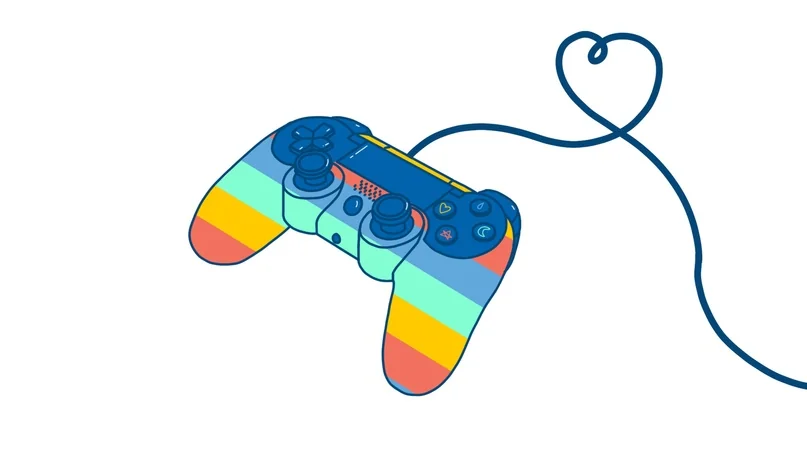

Недавно Всемирная организация здравоохранения признала трансгендерность нормой. В своем эссе Данила Блюз сомневается в этом решении: не рановато ли выпускать столь экзотических птиц на волю, не лучше ли им и дальше жить под присмотром профессионалов?
Когда-то Виктор Цой написал песню, в которой были следующие слова: «Мама, мы все тяжело больны. Мама, я знаю, мы все сошли с ума». Позже группа Cannibal Corpse напишет песню Necropedophile, но это не имеет никакого отношения к тексту. Так вот, времена, когда мы были «все тяжело больны», прошли — теперь все патологически здоровы, потому что мир запутался в собственных девиациях, как та женщина «в годах» из песни группы «Ногу свело» запуталась ногами в проводах.
«И стало, словно в космосе, темно, весь мир похож на черное пятно» — все в точности. Все ориентиры нормальности утрачены окончательно. Не то чтобы раньше понятие нормальности было каким-то суперочевидным, на этот счет философы до сих пор ведут кровопролитные дискуссии, но раньше были какие-то психиатрические догмы. Теперь же и догм никаких нет!
Это я так распаляюсь насчет недавнего решения Всемирной организации здравоохранения, принятого в рамках реформы Международной классификации болезней. На 72-й сессии ВОЗ трансгендерность исключили из списка психических заболеваний. То есть теперь госпожа Малышева может спокойно погладить по головке напомаженного старичка в женском нижнем белье и сказать: «Это норма!» Теперь это считается «состоянием, относящимся к сексуальному здоровью». Ну вот у кого-то проблемы в постели после тридцати лет в браке, а кто-то хочет стать женщиной вплоть до того, что готов отрезать себе кухонным ножиком гениталии. Да это почти одно и то же, и там и там будет разбираться сексолог, несмотря на то что суицидников среди трансгендеров больше, чем среди шизофреников.
Конечно, все ЛГБТ-коммьюнити возрадовалось. Теперь никто не посмеет назвать разгуливающего в платье мужика психом, теперь у него есть справка о том, что он нормальный, как тот Джигурда из мема.
Подобная мера уменьшит стигматизацию трансгендеров в обществе, считает координатор программы сексуального здоровья ВОЗ Лейла Сэй. Да, это общество виновато в том, что больше половины трансов кончают с собой, а почти 80% предпринимали попытку суицида. Надо просто нам всем быть еще более толерантными, поднатужиться, поднапрячься — и тогда эти изумительные люди перестанут убивать себя. Ну что ж, может быть, может быть…
Правда, другие эксперты, не то чтобы они были нетолерантные, просто не присоединились к массовой истерии, говорят, что подобная мера ни фига не пойдет на пользу бедным трансам. Перевод их в категорию, относящуюся к сексуальному здоровью, обеспечивает им помощь сексолога, но никак не других специалистов. Психиатры годами изучали трансгендеров и знают, что в их напудренных головах творится, в курсе, какие тараканы там водятся и чем их травить. В случае обострений врачи могут запереть бедолаг в дурке или прописать курс каких-нибудь веселящих колес. Теперь же из страховок трансов будет исключена вся эта лафа, теперь они нормальные — это не болезнь, а личные закидоны, которые проходят после задушевной беседы с сексологом.

Нужна ли трансам эта, так сказать, нормальность? Они за нее боролись под присмотром психиатров и с рецептом на всякие клевые таблетки в лифчике, а теперь, получив эту самую нормальность, вынесут ли они ее бремя? Может, трансы сродни декоративным собачкам — способны жить только в домашних условиях и совсем не готовы к жизни в дикой природе? Выкиньте мопса в лес — он же либо помрет там от голода, либо будет сожран первым встречным волком. Время покажет, что лучше для трансгендеров: признание их нормой или пожизненные консультации психиатров.
В дополнение ко всеобщей картине сумасшествия вот вам еще один факт. В новую версию Международной классификации болезней будет включена игровая зависимость. Нет, все мы помним эти видосы с безумными детишками вроде Сашко, которые начинают биться в припадках, говорить на забытых языках, ползать по потолку и мастурбировать распятием, стоит маме выключить им компьютер. Но тут просто надо дать ремня засранцу — и все!
Теперь же, заметив интерес к играм (вполне естественный и объяснимый, на то ведь они и игры, чтобы увлекать), родители потащат своих чад к психиатру и начнут закармливать их лошадиными дозами таблеток, просто потому что дитятко предпочитает вместо уроков рубиться в «Доту». Да кто их вообще делает, эти уроки? Конечно, лучше в компьютер рубануть! Но теперь вместо трансов общество будет стигматизировать геймеров. Так что, детки, бросайте свои джойстики, вставляйте в жопу перья и стразы, напяливайте чулки — и бегом в ближайшее варьете, пока вас пацаны с района не застимагтили.